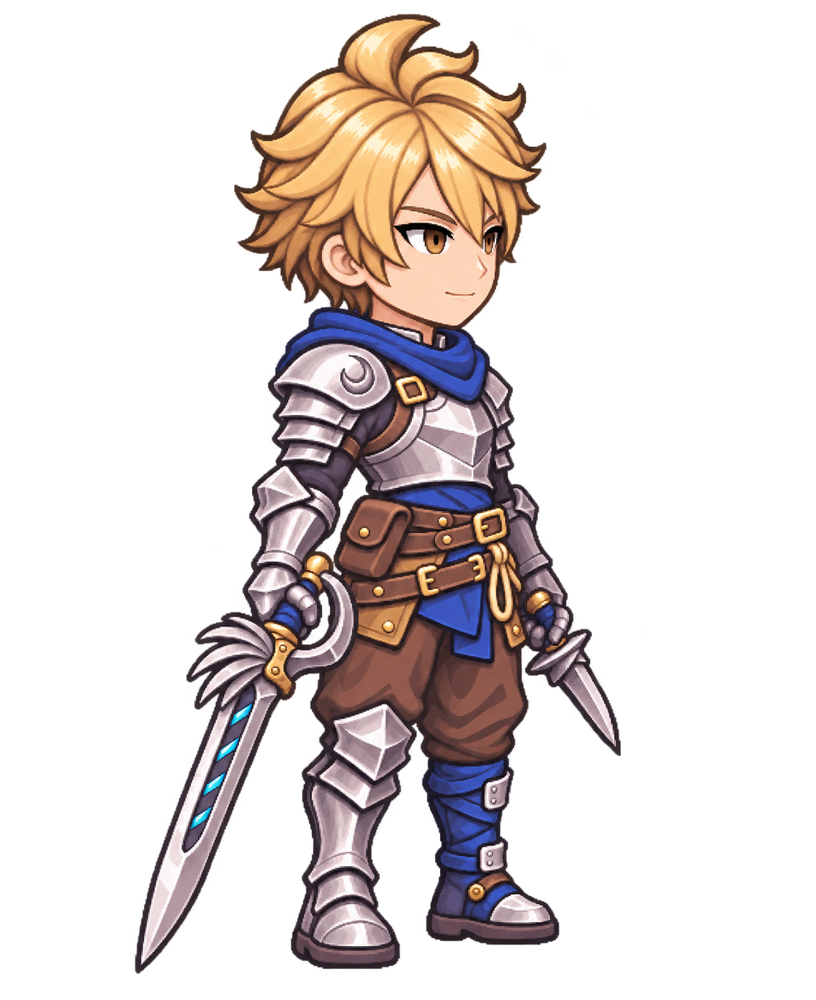

신규2안 · 정면 / 오른쪽45° / 오른쪽90°
선택 정면의 두상·얼굴·장비를 회전 · 생성 원본 바이트 유지 · 같은 전체 표시 키와 발선
밝게 / 어둡게
비교 PNG
측정 메타
검수 기록
세 방향 전신 비교
정면
오른쪽 앞45°
오른쪽 정90°
정면
오른쪽 앞45°

오른쪽 정90°
작은 표시 · 전체 키 57 CSS px
정면
오른쪽 앞45°
오른쪽 정90°
작은 표시 · 전체 키 72 CSS px
정면
오른쪽 앞45°
오른쪽 정90°
57/72CSSpx는 갤러리 표시 관찰이며 게임 통합·실기기 검증이 아닙니다.
개별 PNG는 생성 실제 크기를 유지합니다. 숨은 정수리는 추정이며 정확히 동일한 등신을 주장하지 않습니다. 90°의 먼쪽 왼손 단검은 자연 가림입니다.
닫기